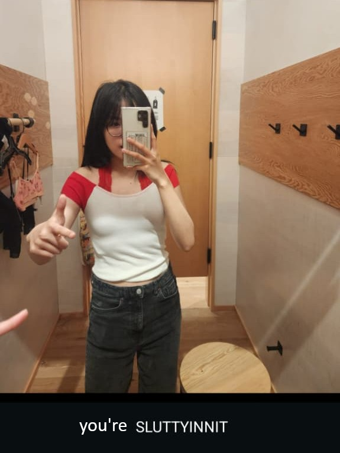

From: Cas
happy birthday meg!!! you're now...
who knew that the girl i was intimidated of because i thought she was too cool became one of my best friends, and she's actually a major loser!!! (joke)
coming into res, i was in a horrible headspace. but making new friends and going outside really helped pull me out of that. you're part of what helped me go from suicidal every day, to suicidal only some days (haha). it's cliche, but being friends with someone with similar struggles as me helped me realize that i was not crazy or overreacting, and that what i was going through was valid (part of why i'm so glad to have met fisha too. girlfailures forever ❤️). I'm so glad that that someone was someone as friendly and genuine as you.
but i think it's only when we started living together that you truly cemented yourself as one of the most important people in my life. i mean it when i say you are one of the best people i have ever met. i really am so so glad to have met you. cliche, again, but genuinely, life wouldn't be the same without you. there's more i could say, but frankly i'm bad at writing and i lack the vocabulary and i'm already tearing up and i don't wanna cry right now.
thank you for being there for me when i'm down, and getting mad at me whenever i'm stupid.
thanks for being our fat chinese baby. thanks for being my adhd support dog. thank you for being my friend.
- cas